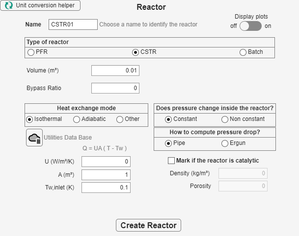

Choose the reactor type first; the window then reveals the size, time, heat-transfer, catalyst, and pressure fields that apply.
Choose the required PFR, CSTR, or Batch model; the available reactor size; thermal mode; pressure behavior; and whether the reactor is catalytic.
Choose PFR, CSTR, or Batch. The visible fields adapt to the selected type. Specify its name and size, choose isothermal, adiabatic, or other heat exchange, and select the pressure behavior. Extra fields cover tubes, batch time, heat transfer, catalyst data, and pressure drop when relevant. Press Create Reactor when the definition is complete.

| Choice | Visible information |
|---|---|
| PFR | Volume, length, number of tubes, tube diameter, catalyst and pressure-drop data when selected. |
| CSTR | Volume, heat-exchange settings, catalyst data, and pressure behavior. |
| Batch | Reaction time and batch-relevant operating choices. |
| Isothermal / Adiabatic / Other | Other exposes heat-transfer coefficient, area, and utility temperatures. |
| Constant / Non constant pressure | Non constant exposes Pipe or Ergun pressure-drop information. |
Choose Simulate an association of reactors for named reactors in series or parallel. Enter the reactor sequence in order, choose Series or Parallel, and provide the requested split for parallel paths. Choose Simulate a reactor with recycling for one named reactor and its recycle ratio.
The optional Evaluate equipment costs selection reports annual cost where the required economic data are available.
Run a single reactor or association, or continue to optimization when a target product is already defined.